Hi, Welcome to my portfolio. Here you will find examples of some of my previous work.
Cooler Carbon
Cooler Carbon (coolercarbon.com.au) is a management tool that houses carbon footprint calculators and management tools for farmers.
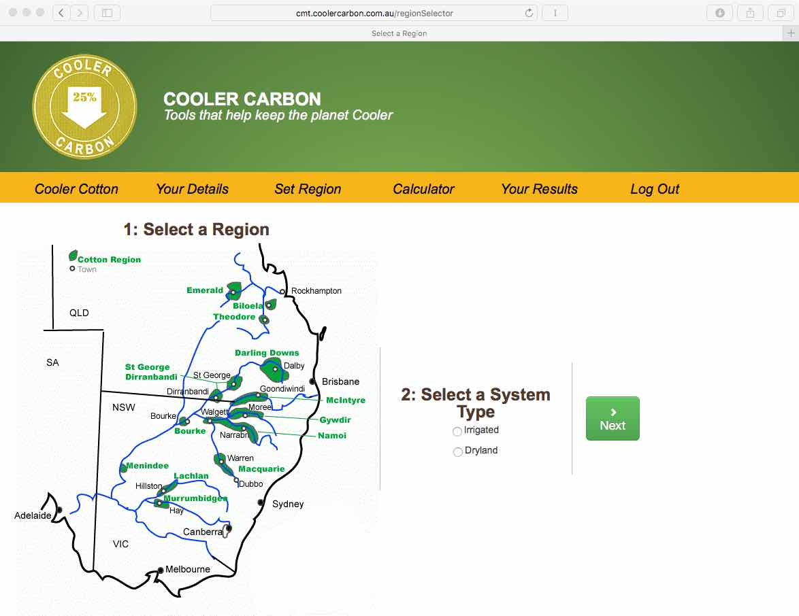
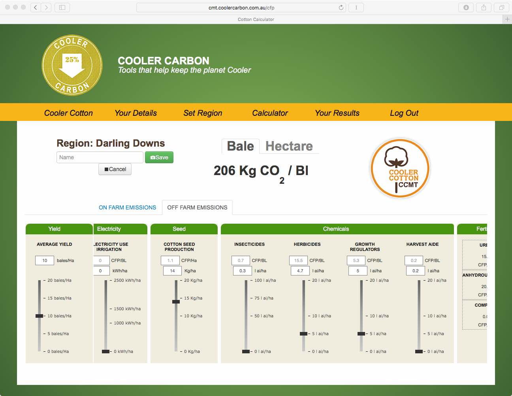
The N2O Network
The N2O Network (n2o.net.au) is collaborative research program established to study nitrous oxide emissions from Australian agriculture soils.
The Data Portal are datasets in the repository that consist of research data and descriptive contextual data (metadata) about the experiments and personal involved.


Semi-Automated Gas Sampling Systems
Semi-Automated Gas Sampling Systems are systems that capture a greenhouse gas samples from soils for further analysis. The system consists of one or multiple chambers linked to a sampling box. The Chambers rely on the accumulation of greenhouse gases within the open bottomed chamber that is placed directly on the soil surface. The air sample is taken from within the Chamber (headspace), injected into an vials and later analysed in a laboratory using a gas chromatograph to determine the amount of nitrous oxide (N2O), methane (CH4) and carbon dioxide (CO2). These devices are controlled with a central computer managed via an app or a web browser.
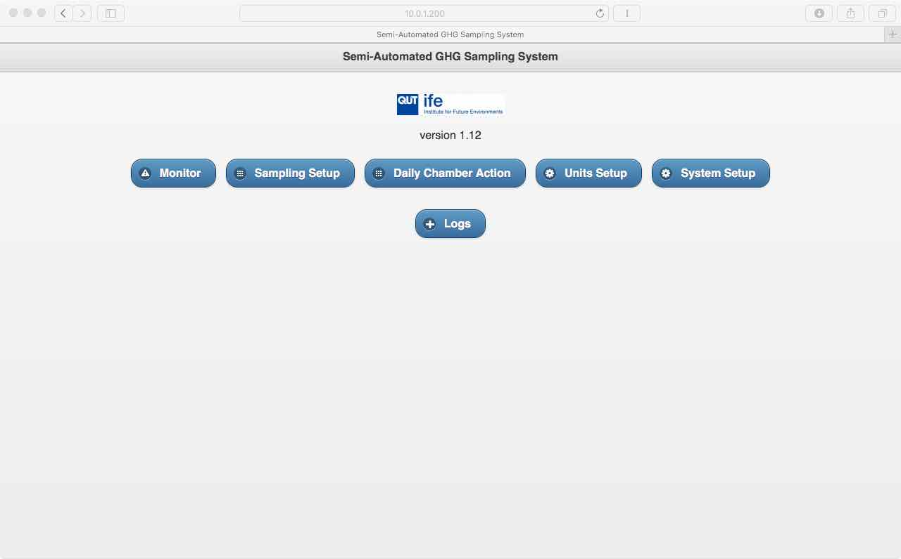
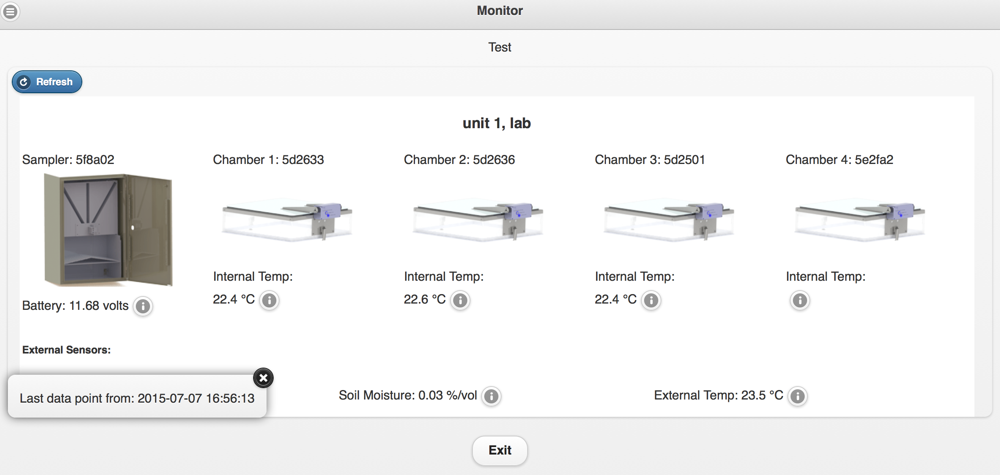
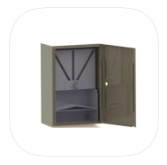
Gas Sampling System App
S.O.C.R.A.T.E.S.
Socrates (socrates.n2o.net.au) A simulation tool for predicting long-term changes in soil organic carbon in terrestrial ecosystems.
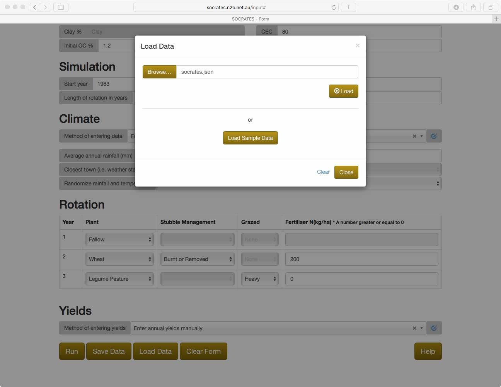
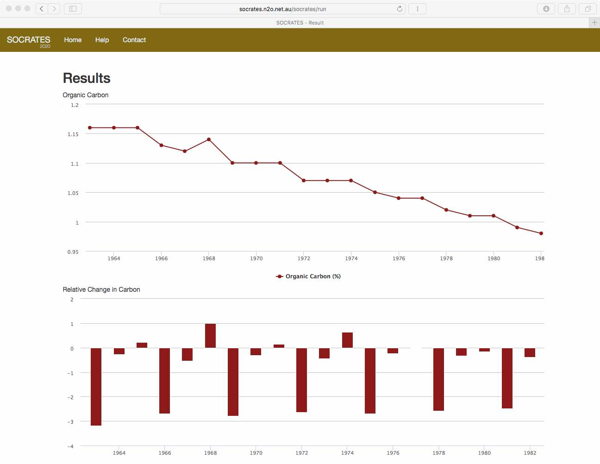
Weather Station
A fresh and modern weather station (serf.qut.edu.au) for the Samford Ecological Research Facility (SERF) that uses DAVIS instruments.
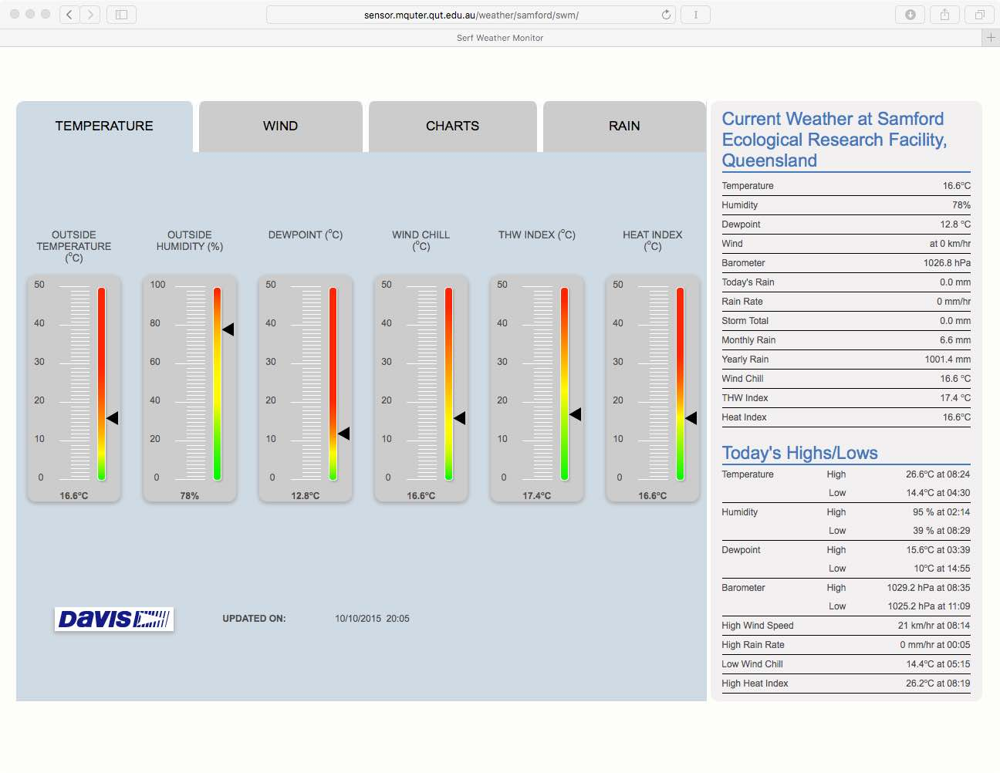
Data Manager
A simple csv data manager to help researchers analyse data obtained from a Gas Sampling System.
 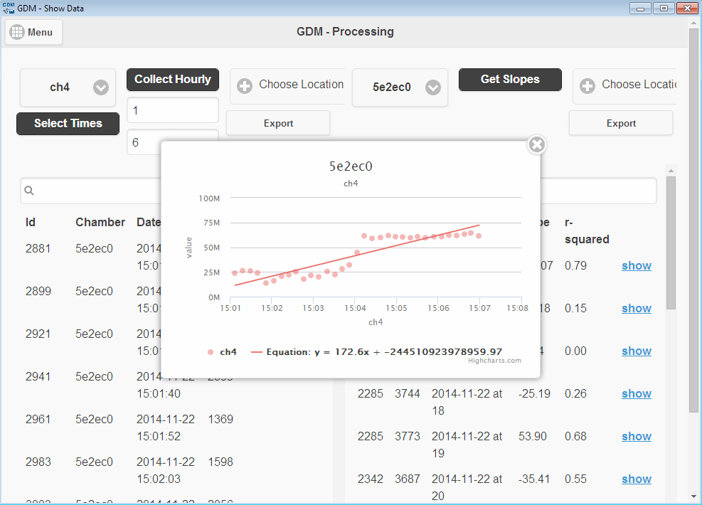
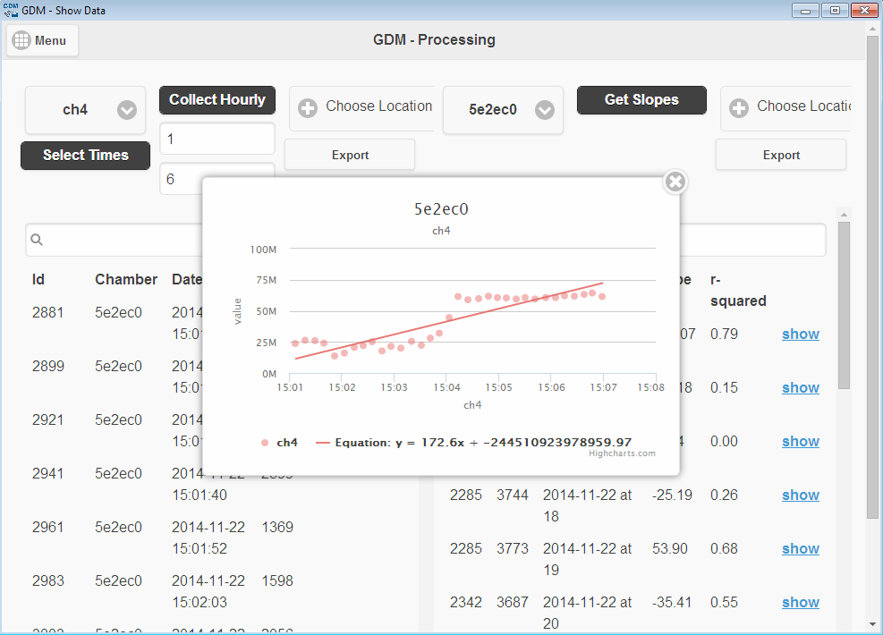
Flux Tower
Data feeds for consistent observations of energy, carbon and water exchange between the atmosphere.
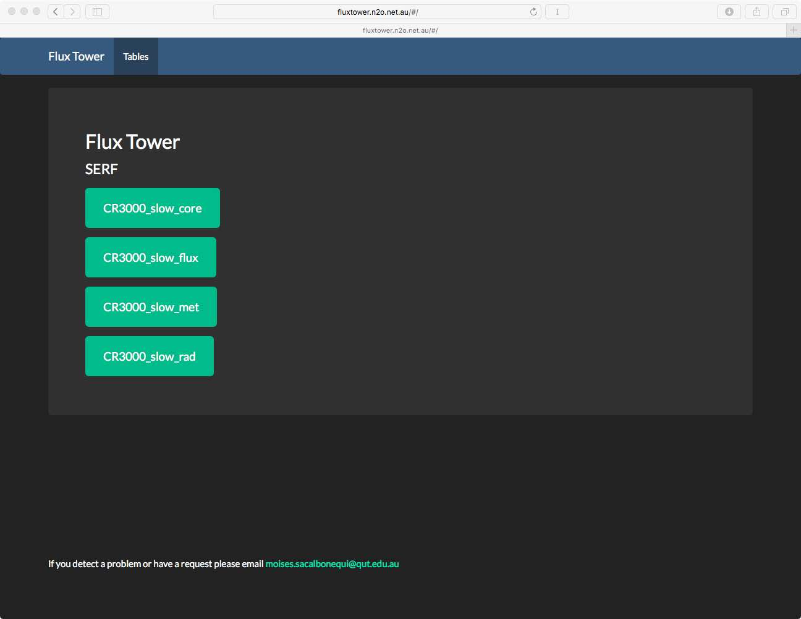
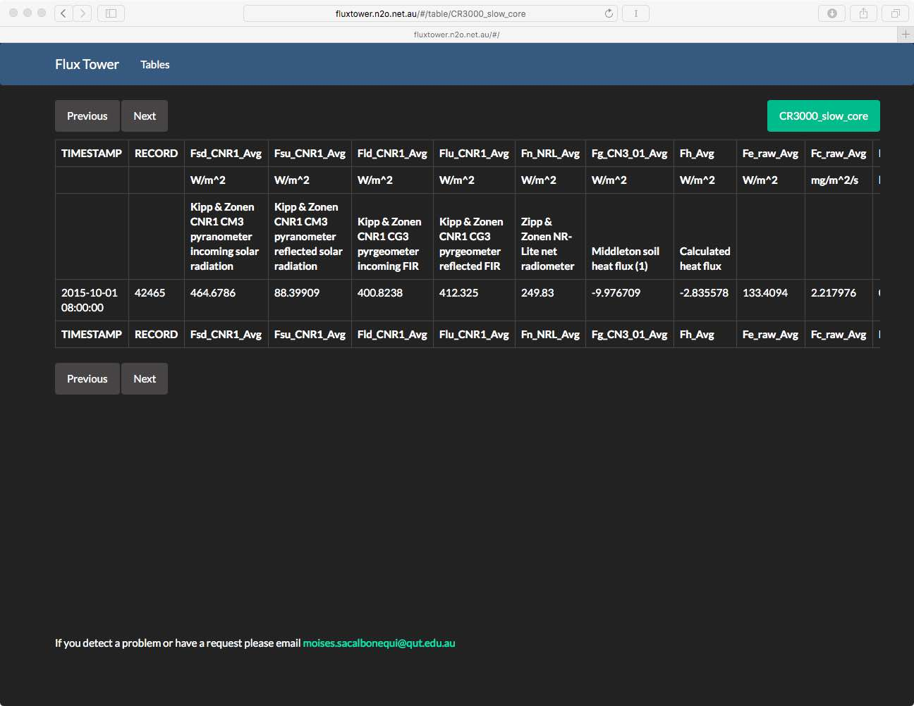